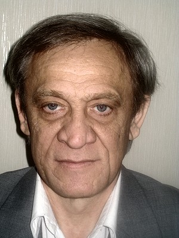

|

|
BROWNIAN SYSTEM PRESENTATIONBohdan LevBogolyubov Institute for Theoretical PhysicsAccording to basic principles of thermodynamics, when a macroscopic system is brought into contact with a thermal bath, the system evolves in time approaching the equilibrium state in the course of relaxation. The state of equilibrium is well defined only under certain idealized conditions, so that the properties of such system are determined by its peculiarities and characteristics of the thermal bath. In most cases, however, the systems are subjected to non-equilibrium conditions and external constraints. Therefore, it is dificult, if not impossible, to determine the governing parameters that can be held constant. Nevertheless, there exist stationary states that can be unambiguously defined for certain open systems. Examples of such systems are given by hot electrons in semiconductors, a system of photons on inhomogeneous scatterers, when the difraction coeficient depends on the frequency of photons, a system of high-energy particles in accelerators that originates from collision with macroscopic particles in dusty plasma.Currently, there does not exist a well-developed description method of the nonequilibrium distribution function, which would take into account possible system states. A standard method describing non-equilibrium states is based on the information on the equilibrium state and small deviations from this state. The nonequilibrium in this approach is treated as a small modification of the equilibrium distribution function. Although far-from-equilibrium systems are abundant in nature, there is no unified commonly accepted theoretical approach which determines possible states of such systems. Hence, it is a fundamentally important task to develop a method for exploring general properties of stationary states of open systems and to establish conditions of their existence. The main idea of this presentation consists in the description of the evolution of a non-equilibrium system as a possible Brownian motion of the system between different states with dissipation energy and diffusion in the energy space. For brevity, such systems will be referred to as Brownian systems. It should be emphasized that the theory of the Brownian motion can be applied to the non-equilibrium systems too. The main goal is to present a simple way to describe the non-equilibrium systems in the energy space and to obtain a new special solution. A few nonlinear models of systems with different processes will be described. 1. R. Balesku, Equilibrium and nonequilibrium statistical mechanics (J. Wiley and Sons, New York, 1978) 2. S.R.D. Groot,P.Mazur, Non-equilibrium Thermodynamics (Dover,New York) 3. G.F. Mazenko, Nonequilibrium Statistical Mechanics (Wiley, New York, 2006) 4. R. Zwanzig, Nonequilibrium Statistical Mechanics (Oxford University Press, New York, 2001) 5. R.F. Streater, Statistical Dynamics: A Stochastic Approach to Nonequilibrium 6. Thermodynamics (Imperial College Press, London, 1995) 7. J. Ross, Thermodynamics and Fluctuations far from Equilibrium (Springer Series in Chemical Physics, Springer, Berlin, 2008) 8. D. Zubaryev, Nonequilibrium statistical thermodynamics (Nauka, 1971) 9. W. Horsthemke, R. Lefever, Noise-induced transition, Theory, Applications in Physics Personal webpage |